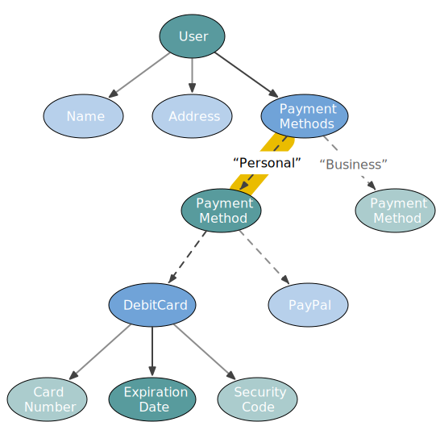

layout: true <div class="watermark"> <a href="https://github.com/fp-tower"> <img src="img/fp-tower/grey-4-fp-watermark-image-raster-transparent-file.png" alt="logo" style="width:200px;"/> </a> </div> --- background-image: url(img/fp-tower/website-background.svg) class: center, middle, white .title[Monocle 3: a peek into the future] --- # Julien Truffaut <br> .medium-left[ <img src="img/fp-tower/julien-truffaut.jpg" alt="Julien Truffaut" style="width:300px;"/> ] .large-right[<br> ## Backend Scala developer ## Author of a Scala FP course: Foundations ## Maintainer of Monocle üßê ] --- # Agenda <br> ## 1. Why optics? ## 2. Current issues with Monocle ## 3. The future with Dotty/Scala 3 --- # Mutation <br> ```scala case class User(`var` name: String, `var` address: Address) case class Address(`var` streetNumber: Int, `var` postCode: String) ``` <br> ```scala val julien = User("julien", Address(12, "E16 4SR")) julien.address.streetNumber // res1: Int = 12 julien.address.streetNumber = 16 // res2: User = User("julien", Address(`16`, "E16 4SR")) ``` --- # FP uses immutable data <br> ## 1. Share data without risk ## 2. Free features: versioning, rollback ## 3. Easier to test ## 4. Concurrency --- # Concurrency .small-left[ <img src="img/corecursive_400x400.jpg" alt="corecursive" style="width:300px;"/> ] .sixty-two-right[ <br> <div class="quote"> <blockquote> <p>We had an engineer at Mozilla who decided to use a thread sanitiser tool to look for data races [in our C ++ codebase]... and he found that in every case where firefox use threads, they had data races, not most, every single case.</p> <cite>Jim Blandy</cite> </blockquote> </div> ] <br><br><br><br><br><br><br><br><br><br><br><br><br><br> .center[ ## CoRecursive podcast: Rust and bitter C++ developers ] --- class: center, middle # How do we change something immutable? --- <br><br><br> .center[ <img src="img/impurepics/Lightbulb-0.png" alt="Lightbub 0" style="width:1000px;"/> ] .reference-top-left[.large[@impurepics]] --- <br><br><br> .center[ <img src="img/impurepics/Lightbulb-1.png" alt="Lightbub 1" style="width:1000px;"/> ] .reference-top-left[.large[@impurepics]] --- <br><br><br> .center[ ] .reference-top-left[.large[@impurepics]] --- <br><br><br> .center[ ] .reference-top-left[.large[@impurepics]] --- <br><br><br> .center[ <img src="img/impurepics/Lightbulb-4.png" alt="Lightbub 4" style="width:1000px;"/> ] .reference-top-left[.large[@impurepics]] --- <br><br><br> .center[ <img src="img/impurepics/Lightbulb-5.png" alt="Lightbub 5" style="width:1000px;"/> ] .reference-top-left[.large[@impurepics]] --- class: center, middle # How do we copy objects in Scala? --- # Example #1: Simple case <br> ```scala case class User(name: String, address: Address) case class Address(streetNumber: Int, postCode: String) val julien = User("Julien", Address(12, "E16 4SR")) ``` <br> .center[ ## How do we change the street number using vanilla Scala? ] -- ```scala julien.copy(address = julien.address.copy(streetNumber = 16) ) // res1: User = User("Julien", Address(16, "E16 4SR")) ``` --- # Example #2: Enumeration <br> ```scala import java.time.YearMonth sealed trait PaymentMethod case class PayPal(email: String) extends PaymentMethod case class DebitCard( cardNumber : String, expirationDate : YearMonth, securityCode : Int ) extends PaymentMethod ``` --- # Example #2: Enumeration <br> ```scala case class User(name: String, address: Address, paymentMethod: PaymentMethod) val julien = User( "Julien", Address(12, "E16 4SR"), DebitCard("4568 5794 3109 3087", YearMonth.of(2022, 4), 361) ) val anna = User("Anna", Address(10, "EC2M 7EB"), PayPal("anna@fp-tower.com")) ``` <br> .center[ ## How do we change the expiry date using vanilla Scala? ] --- # Example #2: Enumeration <br> ```scala def updateExpiry(user: User, newExpiry: YearMonth): User = user.copy(paymentMethod = user.paymentMethod.copy(expirationDate = newExpiry) ) // error: value `copy` is not a member of PaymentMethod // user.paymentMethod.copy(expirationDate = newExpiry) // ^^^^^^^^^^^^^^^^^^^^^^^^^ ``` <br> .center[ ## How do we copy an enumeration? ] --- # Example #2: Enumeration <br> ```scala def updateExpiry(user: User, newExpiry: YearMonth): User = user.copy(paymentMethod = user.paymentMethod match { case card : DebitCard => card.copy(expirationDate = newExpiry) case paypal: PayPal => paypal } ) ``` -- .small-code[ .pull-left[ ```scala updateExpiry(julien, YearMonth.of(2024, 1)) // res4: User = User( // "Julien", // Address(12, "E16 4SR"), // DebitCard("4568 5794 3109 3087", 2024-01, 361) // ) ``` ] .pull-right[ ```scala updateExpiry(anna, YearMonth.of(2024, 1)) // res5: User = User( // "Anna", // Address(10, "EC2M 7EB"), // PayPal("anna@fp-tower.com") // ) ``` ] ] --- # Example #3: Data structure <br> ```scala case class User(name: String, address: Address, paymentMethods: Map[String, PaymentMethod]) val julien = User( "Julien", Address(12, "E16 4SR"), Map( "Personal" -> PayPal("julien@fp-tower.com"), "Business" -> DebitCard("4568 8980 2376 5431", YearMonth.of(2021, 7), 995) ) ) ``` <br> .center[ ## How do we change the expiry date of a payment method? ] --- # Example #3: Data structure <br> ```scala def updateExpiry(user: User, paymentName: String, newExpiry: YearMonth): User = user.copy(paymentMethods = user.paymentMethods.get(paymentName) match { case None => user.paymentMethods case Some(paypal: PayPal) => user.paymentMethods case Some(card : DebitCard) => val updatedCard = card.copy(expirationDate = newExpiry) user.paymentMethods.updated(paymentName, updatedCard) } ) ``` --- # Optic <br> ```scala trait Optic[From, To] { def get(from: From): To def replace(from: From, newTo: To): From def modify(from: From, update: To => To): From } ``` --- # Optics <br> ```scala trait Optic[From, To] { def get(from: From): To // Option[To] or List[To] def replace(from: From, newTo: To): From def modify(from: From, update: To => To): From } ``` <br> .center[ ## Lens, Optional, Traversal, Prism, Iso, ... ] --- # Optics composition <br> ```scala trait Optic[From, To] { def andThen[Next](other: Optic[To, Next]): Optic[From, Next] } ``` .center[ ] --- class: small-code # Optics composition .fifty-two-right[ <br><br><br><br> ```scala // User paymentMethods // Map[String, PaymentMethod] .andThen(index("Personal")) // PaymentMethod .andThen(debitCard) // DebitCard .andThen(expirationDate) // YearMonth ``` ]  --- class: center, middle # Why optics are not popular in Scala? --- class: medium-code # Vanilla Scala vs Optics <br> ```scala def updateExpiry(user: User, paymentName: String, newExpiry: YearMonth): User = user.copy(paymentMethods = user.paymentMethods.get(paymentName) match { case None => user.paymentMethods case Some(paypal: PayPal) => user.paymentMethods case Some(card : DebitCard) => val updatedCard = card.copy(expirationDate = newExpiry) user.paymentMethods.updated(paymentName, updatedCard) } ) ``` ```scala def updateExpiry(user: User, paymentName: String, newExpiry: YearMonth): User = paymentMethods .andThen(index(paymentName)) .andThen(debitCard) .andThen(expirationDate) .replace(user, newExpiry) ``` --- class: medium-code # Problem 1: Multiple compose methods <br> ```scala def updateExpiry(user: User, paymentName: String, newExpiry: YearMonth): User = paymentMethods .composeOptional(index(paymentName)) .composePrism(debitCard) .composeLens(expirationDate) .replace(user, newExpiry) ``` ## In Monocle 2 ```scala trait Optic[From, To] { def composeOptional[Next](other: Optional[To, Next]): Optic[From, Next] def composePrism [Next](other: Prism [To, Next]): Optic[From, Next] def composeLens [Next](other: Lens [To, Next]): Optic[From, Next] } ``` --- class: medium-code # Obvious solution: overload <br> ```scala def updateExpiry(user: User, paymentName: String, newExpiry: YearMonth): User = paymentMethods .andThen(index(paymentName)) .andThen(debitCard) .andThen(expirationDate) .replace(user, newExpiry) ``` <br> ```scala trait Optic[From, To] { def andThen[Next](other: Optional[To, Next]): Optic[From, Next] def andThen[Next](other: Prism [To, Next]): Optic[From, Next] def andThen[Next](other: Lens [To, Next]): Optic[From, Next] } ``` --- class: medium-code # Type Inference Driven Development (TIDD) <br> ```scala def updateExpiry(user: User, paymentName: String, newExpiry: YearMonth): User = paymentMethods .andThen(index(paymentName)) // break type inference üòû üò¢ üò≠ .andThen(debitCard) .andThen(expirationDate) .replace(user, newExpiry) ``` <br> .medium[ * Monocle [#417](https://github.com/optics-dev/Monocle/issues/417) * Inference Driven Design (fs2) by Michael Pilquist ] --- class: medium-code # Monocle 3 thanks to Dotty <br> ```scala def updateExpiry(user: User, paymentName: String, newExpiry: YearMonth): User = paymentMethods .andThen(index(paymentName)) .andThen(debitCard) .andThen(expirationDate) .replace(user, newExpiry) ``` ## Maybe with infix operator ```scala def updateExpiry(user: User, paymentName: String, newExpiry: YearMonth): User = (paymentMethods >>> index(paymentName) >>> debitCard >>> expirationDate) .replace(user, newExpiry) ``` --- class: medium-code # Problem #2: Optics creation <br> ```scala val paymentMethods : Optic[User, Map[String, PaymentMethod]] = ... def index(name: String): Optic[Map[String, PaymentMethod], PaymentMethod] = ... val debitCard : Optic[PaymentMethod, DebitCard] = ... val expirationDate : Optic[DebitCard, YearMonth] = ... ``` <br> ```scala def updateExpiry(user: User, paymentName: String, newExpiry: YearMonth): User = paymentMethods .andThen(index(paymentName)) .andThen(debitCard) .andThen(expirationDate) .replace(user, newExpiry) ``` --- class: medium-code # Problem #2: Optics creation <br> ```scala val paymentMethods: Optic[User, Map[String, PaymentMethod]] = ... val debitCard : Optic[PaymentMethod, DebitCard] = ... val expirationDate: Optic[DebitCard, YearMonth] = ... ``` <br> ```scala def updateExpiry(user: User, paymentName: String, newExpiry: YearMonth): User = paymentMethods .andThen(index(paymentName)) .andThen(debitCard) .andThen(expirationDate) .replace(user, newExpiry) ``` --- class: medium-code # Monocle 2 macros <br> ```scala import monocle.macros.{GenLens, GenPrism} val paymentMethods = GenLens[User](_.paymentMethods) val debitCard = GenPrism[PaymentMethod, DebitCard] val expirationDate = GenLens[DebitCard](_.expirationDate) ``` <br> ```scala def updateExpiry(user: User, paymentName: String, newExpiry: YearMonth): User = paymentMethods .andThen(index(paymentName)) .andThen(debitCard) .andThen(expirationDate) .replace(user, newExpiry) ``` --- class: medium-code # Monocle 2 macro annotation <br> ```scala import monocle.macros.Lenses @Lenses case class User(name: String, address: Address, paymentMethods: Map[String, PaymentMethod]) object User { // Generated // val name : Lens[User, String] = ... // val address : Lens[User, Address] = ... // val paymentMethods: Lens[User, Map[String, PaymentMethod]] = ... } ``` .center[ .pull-left[ ## Requires IDE specific support ] .pull-right[ ## Doesn't exist in Scala 3 ] ] --- # Monocle 3: Focus macro <br> ```scala import monocle.Focus def updateExpiry(user: User, paymentName: String, newExpiry: YearMonth): User = Focus[User](_.paymentMethods .index(paymentName) .as[DebitCard] .expirationDate ).replace(user, newExpiry) ``` <br> .center[ ## IDE support out of the box Thanks to Yilin Wei ] --- # Monocle 3: Focus macro <br> ```scala import monocle.Focus def updateExpiry(user: User, paymentName: String, newExpiry: YearMonth): User = user.focus(_.paymentMethods .index(paymentName) .as[DebitCard] .expirationDate ).replace(newExpiry) ``` <br> .center[ ## IDE support out of the box Thanks to Yilin Wei ] --- # Problem 3: Lawfulness .center[ ] --- class: medium-code # Expected behaviour of an interface <br> ```scala trait Optic[From, To] { def get(from: From): To def replace(from: From, newTo: To): From def modify(from: From, update: To => To): From } ``` <br> ```scala val nameOptic: Optic[User, String] = ... test("get after replace"){ forAll{ (user: User, newName: String) => val updatedUser = nameOptic.replace(user, newName) nameOptic.get(updatedUser) shouldEqual newName } } ``` --- class: medium-code # Expected behaviour of an interface <br> ```scala trait Optic[From, To] { def get(from: From): To def replace(from: From, newTo: To): From def modify(from: From, update: To => To): From } ``` ```scala val nameOptic: Optic[User, String] = ... test("modify fusion"){ forAll{ (user: User, update1: String => String, update2: String => String) => val step1 = nameOptic.modify(user , update1) val step2 = nameOptic.modify(step1, update2) val both = nameOptic.modify(user , update1 andThen update2) step2 shouldEqual both } } ``` --- # FP library design principle <br> ## When using a constructor, you need to verify the behaviour ```scala val nameOptic = Optic[User, String](_.name, (newName, user) => user.copy(name = newName)) ``` <br> ## When using a combinator, you DON'T need to check the behaviour ```scala address andThen streetNumber ``` --- class: medium-code # FP libraries only offer safe combinators <br> ```scala val julien = User( "Julien", Address(12, "E16 4SR", "UK"), Map( "Business" -> DebitCard("4568 8980 2376 5431", YearMonth.of(2022, 7), 732), "Personal" -> DebitCard("4568 1234 4444 5555", YearMonth.of(2020, 1), 995), "FX" -> PayPal("julien@fp-tower.com") ) ) julien.focus(_.filter(_.address.country == "UK") .paymentMethods .* .as[DebitCard] .cardNumber ).getAll // res: List[String] = List("4568 8980 2376 5431", "4568 1234 4444 5555") ``` --- class: medium-code # FP libraries only offer safe combinators <br> ```scala val julien = User( "Julien", Address(12, "95350", `"France"`), Map( "Business" -> DebitCard("4568 8980 2376 5431", YearMonth.of(2022, 7), 732), "Personal" -> DebitCard("4568 1234 4444 5555", YearMonth.of(2020, 1), 995), "FX" -> PayPal("julien@fp-tower.com") ) ) julien.focus(_.filter(_.address.country == "UK") .paymentMethods .* .as[DebitCard] .cardNumber ).getAll // res: List[String] = `List()` ``` --- class: medium-code # FP libraries only offer safe combinators <br> ```scala val julien = User( "Julien", Address(12, "E16 4SR", "UK"), Map( "Business" -> DebitCard("4568 8980 2376 5431", YearMonth.of(2022, 7), 732), "Personal" -> DebitCard("4568 1234 4444 5555", YearMonth.of(2020, 1), 995), "FX" -> PayPal("julien@fp-tower.com") ) ) julien.focus(_.paymentMethods .* .as[DebitCard] .filter(_.expirationDate.isAfter(YearMonth.of(2020, 5))) // ❌ break the laws!!! .cardNumber ).getAll // res: List[String] = List("4568 8980 2376 5431") ``` --- class: medium-code # FP libraries only offer safe combinators <br> ```scala val optic = Focus[User](_.paymentMethods .* .as[DebitCard] .filter(_.expirationDate.isAfter(YearMonth.of(2020, 5))) .expirationDate ) val updated = optic.modify(julien, _.minusYears(2)) // updated: User = User( // "Julien", // Address(12, "E16 4SR", "UK"), // Map( // "Business" -> DebitCard("4568 8980 2376 5431", `2020-07`, 732), // "Personal" -> DebitCard("4568 1234 4444 5555", 2020-01, 995), // "FX" -> PayPal("julien@fp-tower.com") // ) //) ``` --- class: medium-code # FP libraries only offer safe combinators <br> ```scala val optic = Focus[User](_.paymentMethods .* .as[DebitCard] .filter(_.expirationDate.isAfter(YearMonth.of(2020, 5))) .expirationDate ) val updated1 = optic.modify(julien , _.minusYears(2)) val updated2 = optic.modify(updated1, _.plusMonths(3)) // updated2: User = User( // "Julien", // Address(12, "E16 4SR", "UK"), // Map( // "Business" -> DebitCard("4568 8980 2376 5431", `2020-07`, 732), // "Personal" -> DebitCard("4568 1234 4444 5555", 2020-01, 995), // "FX" -> PayPal("julien@fp-tower.com") // ) //) ``` --- class: medium-code # Filter breaks fusion property (in some cases) <br> ```scala val optic = Focus[User](_.paymentMethods .* .as[DebitCard] .filter(_.expirationDate.isAfter(YearMonth.of(2020, 5))) .expirationDate ) val updated = optic.modify(julien, _.minusYears(2).plusMonths(3)) // updated: User = User( // "Julien", // Address(12, "E16 4SR", "UK"), // Map( // "Business" -> DebitCard("4568 8980 2376 5431", `2020-10`, 732), // "Personal" -> DebitCard("4568 1234 4444 5555", 2020-01, 995), // "FX" -> PayPal("julien@fp-tower.com") // ) //) ``` --- class: center, middle # Monocle 3 will be less strict and <br> offer powerful combinators (maybe dangerous) --- class: medium-code # Problem 4: Custom errors <br> ```scala def updateExpiry(user: User, paymentName: String, newExpiry: YearMonth): User = user.copy(paymentMethods = user.paymentMethods.get(paymentName) match { case None => user.paymentMethods case Some(paypal: PayPal) => user.paymentMethods case Some(card : DebitCard) => val updatedCard = card.copy(expirationDate = newExpiry) user.paymentMethods.updated(paymentName, updatedCard) } ) ``` ```scala def expiryOptic(paymentName: String): Optic[User, YearMonth] = paymentMethods .andThen(index(paymentName)) .andThen(debitCard) .andThen(expirationDate) ``` --- class: medium-code # Monocle 2 uses Option <br> ```scala val julien = User( "Julien", Address(12, "E16 4SR", "UK"), Map( "Business" -> DebitCard("4568 8980 2376 5431", YearMonth.of(2022, 7), 732), "Personal" -> DebitCard("4568 1234 4444 5555", YearMonth.of(2020, 1), 995), "FX" -> PayPal("julien@fp-tower.com") ) ) ``` .pull-left[ ```scala expiryOptic("Personal").get(julien) // res: Option[YearMonth] = Some(2020-01) expiryOptic("FX").get(julien) // res: Option[YearMonth] = None expiryOptic("Other").get(julien) // res: Option[YearMonth] = None ``` ] .pull-right[.center[ <br> ## Same for replace, modify ]] --- class: medium-code # Monocle 3 uses Either and union types <br> ```scala val julien = User( "Julien", Address(12, "E16 4SR", "UK"), Map( "Business" -> DebitCard("4568 8980 2376 5431", YearMonth.of(2022, 7), 732), "Personal" -> DebitCard("4568 1234 4444 5555", YearMonth.of(2020, 1), 995), "FX" -> PayPal("julien@fp-tower.com") ) ) ``` .large-left[ ```scala expiryOptic("Personal").get(julien) // res = Right(2020-01) expiryOptic("FX").get(julien) // res = Left(Expected DebitCard but got Paypal) expiryOptic("Other").get(julien) // res = Left(NoSuchElementException: key not found: Other) ``` ] .medium-right[ <br> ```scala Either[ String | NoSuchElementException, YearMonth ] ``` ] --- <br> <br> .center[ .pull-left[ # Monocle 2 <br> ### Boiler plate when composing optics ### Boiler plate when generating optics ### Lawful at all cost ### Errors are limited to Option ] .pull-right[ # Monocle 3 <br> ### Single composition method ### Focus macro ### Offer powerful combinators (dangerous) ### Custom errors ] ] --- # Join the team <br><br><br> <div class="row"> <div class="column"> <div class="card"> <div class="container"> <h3>Carlos Quiroz</h3> </div> </div> </div> <div class="column"> <div class="card"> <img src="img/fp-tower/julien-truffaut-square.png" alt="Julien Truffaut" style="width:100%"/> <div class="container"> <h3>Julien Truffaut</h3> </div> </div> </div> <div class="column"> <div class="card"> <div class="container"> <h3>Yilin Wei</h3> </div> </div> </div> <div class="column"> <div class="card"> <div class="container"> <h3>Kenji Yoshida</h3> </div> </div> </div> <div class="column"> <div class="card"> <img src="img/question-mark-profile.png" alt="You" style="width:100%"> <div class="container"> <h3>Yourself</h3> </div> </div> </div> </div> --- background-image: url(img/fp-tower/website-background.svg) class: center, middle, white .title[Thank you,<br>Any questions?]